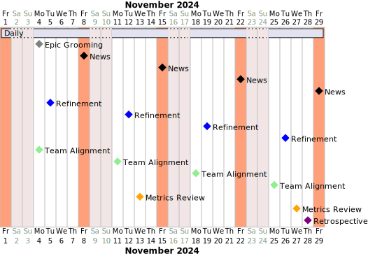

Way of Work
Es importante definir la forma de trabajar de un equipo y organización. En específico se recomienda fundamentarse en el flujo continuo para mejorar el desempeño de los equipos, permitiendo una entrega de valor constante.
En la siguiente carta gantt se puede apreciar la organización de los distintos hitos en un mes.

Horarios laborales
Las labores se deben realizar en los siguientes horarios:
-
Lunes a Jueves: 9:30 AM - 18:00 PM,
-
Viernes: 9:30 AM - 13:00 PM.
Consideraciones:
-
Los Viernes no está permitido enviar cambios a producción (salvo excepciones autorizadas).
-
Existe un rol de Sherpa que se encarga de monitorear los sistemas y resolver problemas en horarios extraordinarios.